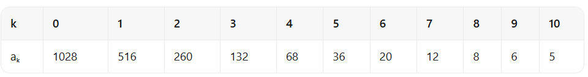

递推 $a_k=\frac12a_{k-1}+2$ 的不动点是 $4$，故 $a_k=4+\frac{a_0-4}{2^k}$。$11$ 项对应 $10$ 次递推，分母最大 $2^{10}=1024$，所以 $1024\mid(a_0-4)$；严格递减要求 $a_0>4$。最小取 $a_0=4+1024=1028$，数字和 $1+0+2+8=11$，答案 (D)。
The strictly decreasing sequence of $11$ positive integers $(a_0,a_1,a_2,\ldots,a_{10})$ is defined by the recursive rule $a_k=\frac12a_{k-1}+2$ for $k\ge1$. Let $N$ be the minimum possible value of $a_0$. What is the sum of the digits of $N$? (A) $7$ (B) $9$ (C) $10$ (D) $11$ (E) $14$
中文翻译：由 $11$ 个正整数构成的严格递减序列 $(a_0,a_1,\ldots,a_{10})$ 满足 $a_k=\frac12a_{k-1}+2\ (k\ge1)$。设 $N$ 是 $a_0$ 的最小可能值，求 $N$ 的各位数字之和。 (A) $7$ (B) $9$ (C) $10$ (D) $11$ (E) $14$
📌 答案依据：讲义《2026AMC10A 答案与解析》（用户随附，含答案总表与逐题解析）
讲义给出的正确选项为 (D) $11$，本站解析与之一致。
| 常见错误 | 错在哪 |
|---|---|
答 (C) 10 或 (B) 9 | 把 $11$ 项误当成 $11$ 次递推，写成 $2^{11}=2048\mid(a_0-4)$，得 $N=2052$（数字和 $9$）；或取 $a_0-4=512$ 得 $N=516$（数字和 $12$）。讲义特别提醒：$11$ 个项对应 $10$ 次递推，指数不能误写成 $11$。 |
答 (A) 7 | 只检查了 $a_{10}$ 为整数（要求 $2^{10}\mid(a_0-4)$）却漏了「严格递减」，误取 $a_0=4$（常数序列）或更小的数，再拿某个别的数凑数字和 $7$。实际上 $a_0>4$ 是严格递减的充要条件。 |
答 (E) 14 | 从末项 $a_{10}$ 反推时把递推写成 $a_{k-1}=2(a_k-2)$，一路乘 $2$ 却没扣掉常数 $2$ 的累积，得到 $a_0=2^{11}\cdot\text{某数}+ \cdots$，凑出数字和 $14$。正确做法是先平移减不动点，把非齐次递推变成纯等比。 |
根本问题：没有先找不动点把递推齐次化。$a_k-4=\frac12(a_{k-1}-4)$ 一步就把「整数性」翻译成整除条件，否则逐项反推极易在常数项上出错。
与官方解法同源：本站方案一与用户随附讲义《2026AMC10A 答案与解析》第 18 题的书面解答同源（本卷官方站尚未收录，讲义即本次权威答案依据）——不动点 $x=\frac{x}{2}+2$ 给出 $x=4$，于是 $a_k=4+\frac{a_0-4}{2^k}$；$11$ 项对应 $10$ 次递推，要求 $2^{10}=1024$ 整除 $a_0-4$，严格递减要求 $a_0>4$，故最小 $N=4+1024=1028$，数字和 $1+0+2+8=11$。
本站的增量是补上完整序列核验、一般参数通式 $N=2c+2^{m-1}$，以及 $\le10000$ 的全部可行首项枚举。
第 1 步 · 找不动点并齐次化。 解 $x=\frac{x}{2}+2$ 得 $x=4$。两边同减 $4$：
$$a_k-4=\frac12\left(a_{k-1}-4\right)\quad\Longrightarrow\quad a_k=4+\frac{a_0-4}{2^k}.$$第 2 步 · 整数性条件。 序列共 $11$ 项（$k=0,1,\ldots,10$），递推做了 $10$ 次，故分母最大为 $2^{10}=1024$。要求全部 $a_k$ 为整数，等价于
$$2^{10}=1024 \mid (a_0-4).$$（讲义强调：指数是 $10$ 不是 $11$。）
第 3 步 · 严格递减与正性。 由通项
$$a_k-a_{k+1}=\frac{a_0-4}{2^{k+1}}>0 \Longleftrightarrow a_0>4 .$$又因 $a_0>4$ 时每项 $a_k=4+\frac{a_0-4}{2^k}>4>0$，正性自动满足。
第 4 步 · 取最小值并求数字和。 $a_0-4$ 必须是 $1024$ 的正倍数，最小取 $1024$：
$$N=a_0=4+1024=1028,\qquad \text{数字和}=1+0+2+8=11 .$$讲义给出的完整序列为
$$1028,\ 516,\ 260,\ 132,\ 68,\ 36,\ 20,\ 12,\ 8,\ 6,\ 5.$$
答案：(D) $11$。
由 $a_k=\frac12a_{k-1}+2$ 得 $a_{k-1}=2a_k-4=2(a_k-2)$。设 $a_{10}=t$（正整数），反复回代：
$$a_{10-j}=2^j t-4\left(2^j-1\right)=4+2^j(t-4).$$要 $a_0=4+2^{10}(t-4)$ 最小且整列严格递减，需 $t>4$ 且为正整数，最小 $t=5$，于是 $a_0=4+1024=1028$ ✓。这条路径不依赖「不动点」的语言，但结论完全一致，也顺带说明末项必为 $5$。
验证技巧：① 完整序列 $1028,516,260,132,68,36,20,12,8,6,5$ 全部为整数且严格递减 ✓；② 讲义附带的序列表与本站逐项一致（见下图）；③ 若取 $a_0=1027$，则 $a_1=\frac{1027}{2}+2$ 非整数，立刻出局 ✓；④ 若取 $a_0=4$，序列恒为 $4$，不严格递减，同样出局 ✓；⑤ 数字和核对 $1+0+2+8=11$ ✓。
核心知识点：非齐次线性递推先减去不动点变齐次等比；整数性于是变成一个干净的整除条件 $2^{m-1}\mid(a_0-2c)$。
必须掌握的要点：
取 $N=1028$，完整写出 $a_0$ 到 $a_{10}$ 的 $11$ 项，逐项验证「全为整数」「严格递减」「全为正」，并求出相邻两项之差的变化规律。
由 $a_k=4+\frac{1024}{2^k}$ 得各项。相邻差 $a_k-a_{k+1}=\frac{1024}{2^{k+1}}=2^{9-k}$，即从 $512$ 每次减半到 $1$，全部为正整数，故严格递减且全为正。末项 $a_{10}=4+1=5$。
要点：完整列举是整除条件最直观的验收；差值恰好是 $2$ 的幂次递减，说明「$1024$ 整除」这个条件恰到好处。
把「$11$ 个正整数」改成「$6$ 个正整数」（递推常数仍为 $2$），求最小首项 $N$ 及其数字和，并写出整列。
$6$ 项对应 $5$ 次递推，需 $2^5=32\mid(a_0-4)$，最小 $a_0-4=32$，故 $N=36$，数字和 $3+6=9$。逐项：$36\to20\to12\to8\to6\to5$，全部整数且严格递减 ✓。
要点：指数随项数减一而变化；把 $m$ 从 $11$ 换成 $6$，$N$ 从 $1028$ 骤降到 $36$，正好用来检验「指数 $=m-1$」是否记牢。
说明 $a_0=1027$、$a_0=4$、$a_0=2052$ 三者中哪些是合法首项；对不合法的给出第一条被破坏的约束。
$a_0=1027$：$a_0-4=1023$ 不是 $1024$ 的倍数，$a_1=\frac{1027}{2}+2$ 非整数，第一条被破坏的是整数性。$a_0=4$：$a_k\equiv4$，序列常数，第一条被破坏的是严格递减。$a_0=2052=4+2\cdot1024$：通项 $a_k=4+\frac{2048}{2^k}$ 全部为整数且严格递减，合法，但不是最小值。
要点：「合法」与「最小」是两件事；$2052$ 合法却不是答案，选项 (B) 的 $9$ 正是它的数字和，属于典型干扰项。
把递推改为 $a_k=\frac12a_{k-1}+c$（$c$ 为正整数）、项数改为 $m$。证明最小首项为 $N=2c+2^{m-1}$，并用 $(c,m)=(3,4)$ 验证。
不动点为 $x=2c$，故 $a_k=2c+\frac{a_0-2c}{2^k}$。整数性要求 $2^{m-1}\mid(a_0-2c)$，严格递减要求 $a_0>2c$，最小取 $a_0-2c=2^{m-1}$，即 $N=2c+2^{m-1}$。代入 $c=3,m=4$：$N=6+8=14$；序列 $14,10,8,7$，全部整数且严格递减 ✓。本题 $c=2,m=11$ 给 $4+1024=1028$ ✓。
要点：平移量是 $2c$ 而不是 $c$，这是一般化时最容易抄错的一步；用一次小参数验证即可确认。
列出 $\le10000$ 的全部合法首项 $a_0$ 及其数字和，指出其中数字和最大者；并说明数字和是否随 $a_0$ 单调。
合法首项形如 $a_0=4+1024j\ (j=1,2,\ldots)$，$j=1..9$ 时 $a_0\le10000$，共 $9$ 个，数字和依次为 $11,9,16,5,12,19,17,24,13$。最大值 $24$ 出现在 $8196$；序列先降后升再降，不单调，故不能靠「取最小首项再猜数字和最小」来答题。注意数字和恰为 $11$ 的只有 $j=1$ 即 $N=1028$，与题目答案一致。
要点：整除条件给出的是等差数列 $4+1024j$，但数字和是十进制性质，与 $j$ 无关；讲义强调先按整除性定 $N$，再单独算数字和，顺序不能反。
口诀：「先减不动点，等比现原形；项数减一是指数，整除取倍最小行；数字和另算莫要猜」。